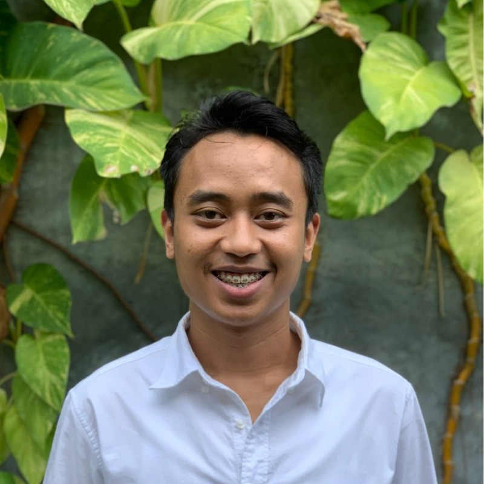

Decision memo

Why I'm moving into Business Analysis
For six years I've been the person between the data and the decision.
I clean it, analyze it, map it — but the most valuable moment is always when someone acts on it. That's where I want to work now: understanding the business problem first, then making sure the data, the process and the people line up to solve it.
What I bring to the BA seat
- Requirements gathering
- Stakeholder mapping
- Process modeling (BPMN)
- Data-driven business cases
- User stories & acceptance criteria
- SOP & documentation design
Appendix A · BA work I've already done, without the title
- Requirements before code. Agreed default list criteria with marketing stakeholders before automating anything.
- Process redesign. Turned a two-hour manual request into a one-step workflow, and a noisy job hunt into a human-in-the-loop pipeline.
- Decision support. Built the dashboards hospital leadership used to track financial trends and clinical KPIs.
- In progress. A full BA case study for a family homestay: stakeholder map, process maps, BRD and user stories.
Toolkit
- Python (Pandas, NumPy)
- SQL
- Power BI
- Tableau
- Excel
- Google Apps Script
- ArcGIS
- QGIS
- PostGIS